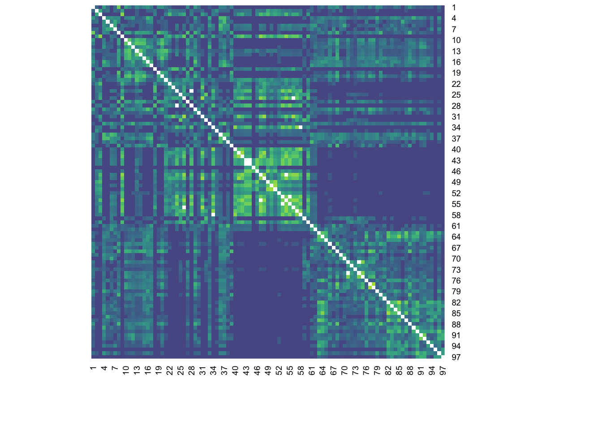
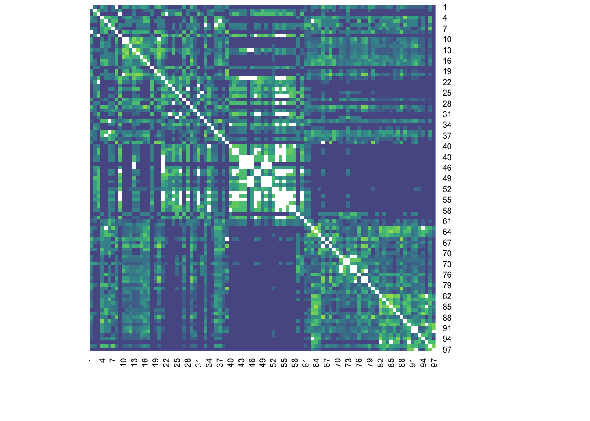
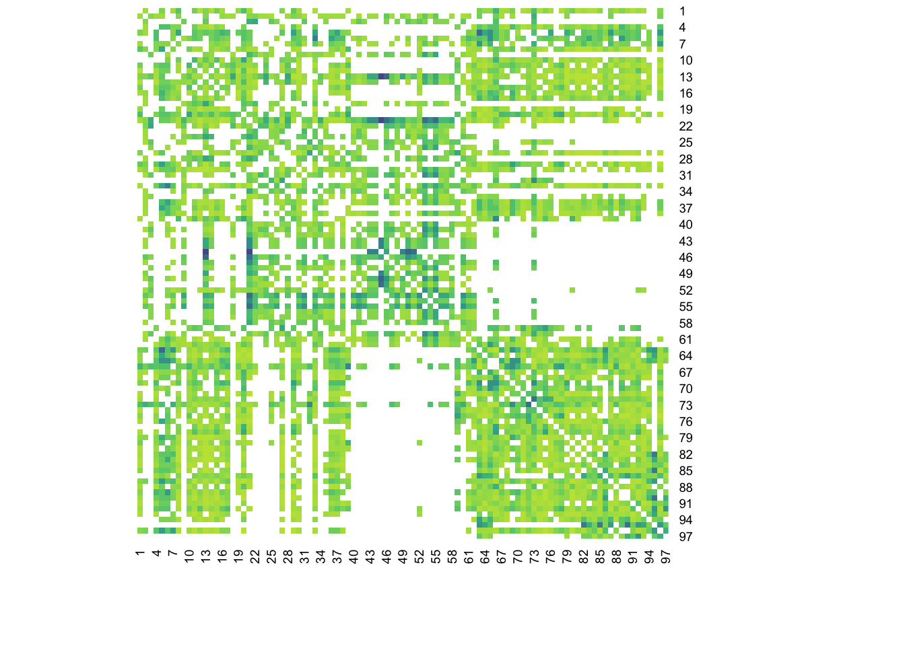
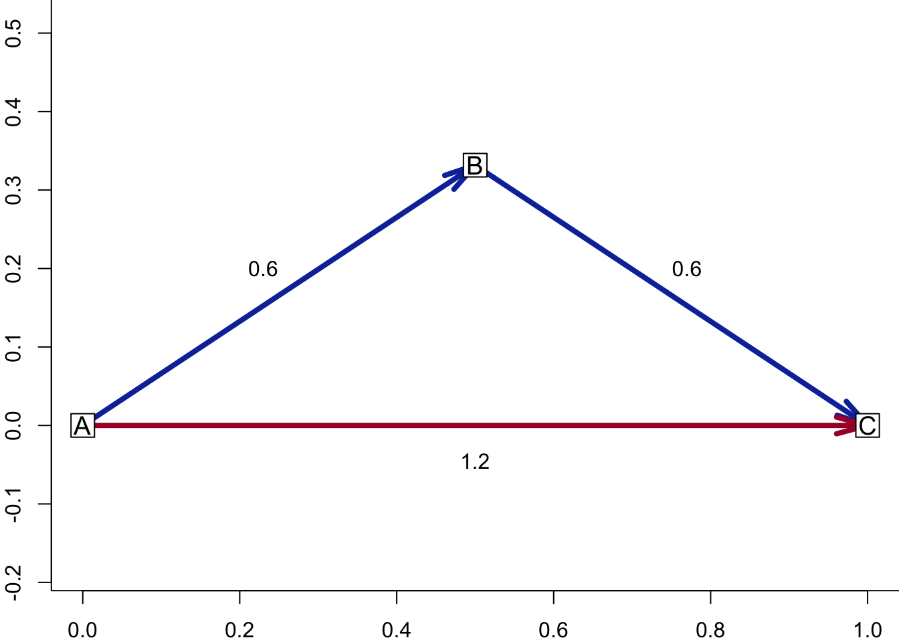
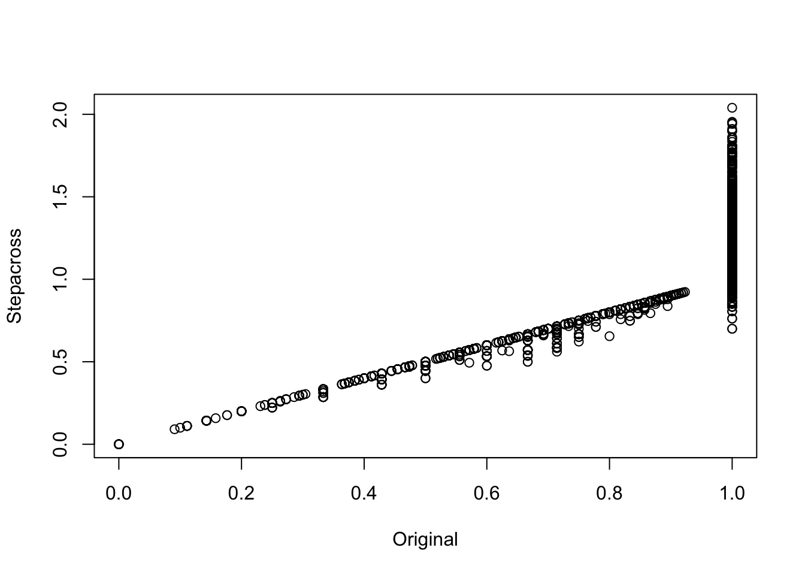

Chapter 7 Dissimilarities
How dissimilar are community compositions among sites?
Dissimilarities among sites help us position sites along gradients, organize them into clusters, or distinguish differences among groups of sites.
7.1 Dissimilarity matrix for species
We can create a pairwise dissimilarity matrix D based on shared and unshared species among sites.
An easy way to calculate this matrix is to use the vegdist (i.e., vegetation distance) function in the vegan package.
For the resulting dissimilarity values, high values = more dissimilar (different) and low values = more similar (same).
Euclidean distance is probably the most intuitive dissimilarity metric, however it is seldom useful for species abundance data.
Here we use the more preferable Bray-Curtis (Sørensen) dissimilarity.
Legendre and Legendre (2012) give a full survey of existing distance/dissimilarity measures (there are many – in fact, the vegdist function includes 22 different dissimilarity methods!!).
Also, checkout the help file for vegdist for lots of helpful information and references – ?vegdist.
As in Section 5 we are using the tabasco function to create a heatmap of a matrix.
Recall that darker colors indicate greater values, thus greater turn-over in this case.

7.1.1 What metric to use?
The specific measure used might depend on your particular ecological question, your data collection methods, or on the variable types you are working with.
Jaccard - focuses on shared species, using presence-absence data only. Range 0-1.
Bray-Curtis - considers species composition and abundance. Range 0-1.
Gower - measures general dissimilarity and can be used with continuous, ordinal, or categorical data. This makes it particularly useful when calculating dissimilarities among plots with mixed environmental variable types or among species with mixed trait variable types.
7.2 Partitioning turnover and nestedness
Turnover is related to species replacement across sites (or time)
Nestedness is the proportion of species that are subset of the species that occur at another site (or time period). In other words, are the species at one site found in another site?
# Calculate beta diversity (Uniqueness and Nestedness)
spe_pa <- vegan::decostand(spe, method = "pa")
beta_diversity <- betapart::beta.pair(spe_pa)There are three items in the list output:
beta.sim: turnover component; represents dissimilarity due to species turnover/replacement. High SIM suggests species replacement is a main driver of site differences (not richness)

beta.sne: nestedness component; represents dissimilarity due to shared species or richness differences. High SNE suggests species loss and nestedness (richness differences) are main drivers of site differences.

beta.sor: total dissimilarity, using Sorenson or Jaccard dissimilarity

7.3 Stepacross adjustment
Sometimes a pair of sites are “maximally dissimilar”: they share no species at all, so pairwise dissimilarity is impossible to quantify using a proportional measure (e.g., Bray-Curtis). Stepacross adjustment solves this by linking “no-share” sites with intermediate site(s) that share at least some species in common. Why should we be concerned about this? As datasets become sparse (many zeros), large numbers of site pairs end up with Bray–Curtis = 1. This causes an accumulation of ties and a loss of information about the underlying ecological gradient. Smith (2017) describes other possible solutions.
Here’s a “toy-example” of the issue:
How dissimilar are SUs A and C? They share no species in common…
m <- data.frame(matrix(c(1,1,0,0,0, 0,1,1,1,0, 0,0,0,1,1), nrow=3, byrow=T),
row.names=paste0('su',c('A','B','C')))
names(m) <- paste0('sp',1:5)
m## sp1 sp2 sp3 sp4 sp5
## suA 1 1 0 0 0
## suB 0 1 1 1 0
## suC 0 0 0 1 1…Bray-Curtis will max out at 1.0…
## suA suB
## suB 0.6
## suC 1.0 0.6…but stepacross() replaces “too long” distances with shortest path.
## Too long or NA distances: 1 out of 3 (33.3%)
## Stepping across 3 dissimilarities...## suA suB
## suB 0.6
## suC 1.2 0.6Visually we can think of this as the figure below:

And here we show what happens when we use the stepacross function on our Mafragh data set.
## Too long or NA distances: 2055 out of 4656 (44.1%)
## Stepping across 4656 dissimilarities...